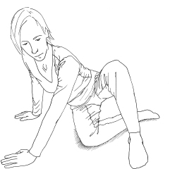

Feldenkrais for Actors
Do less until you can do intelligently. It’s only when you can do intelligently that you can do more.
Olena Nitefor, Feldenkrais trainer,
Manchester Advanced Training, April 2015

Moshe Feldenkrais and Mikonosuke Kawaishi Sensei 7th dan Judo (Paris 1930s).
Skill more than strength.
© International Feldenkrais Federation Archive
We have seen that just doing more does not mean having more clarity or skill, but nor does it always mean more power either. I often find it is a sticking point with actors for whom strength and power – and, of course, fitness and body image – are often deep concerns. Young actors often want to work and train hard to achieve these ends, but, if pushing and straining becomes a habit, not only does it interfere with their acting but they may end up thinking they need to use tension and effort to appear powerful on stage or screen. As a student of a demanding form of karate myself, I am not about to downgrade training, but it’s very important to understand a few things about the role of tension and what it means to be – and appear – powerful.
As everyone knows, you need to contract muscles to do anything, and that contraction involves tension. But if muscles habitually contract and tense beyond the length of time or the degree required for a specific activity, you are into the whole picture of inefficiency, as well as too much noise and reduced sensitivity. We have already seen that the latter is unhelpful for an actor, but in this chapter I would like to point out that tension on its own doesn’t even make you strong. Anyone who fights well knows that, if you want to deliver a powerful punch, you have to contract and tense at the very end of the technique in order to deliver the force you have generated – but not from the start. Many people have an image that the punch will require a big effort and so everything tenses up right from the beginning, but that means they sacrifice speed as they can’t move fast when everything is tense. Newton’s second law of motion says that force = mass x acceleration.68 Acceleration needs a certain softness or ‘compliance’. The effort comes mostly from an initial impulse from the legs and hips that whips through the back and chest and enables the arm to be thrown out. The co-contraction (tension) comes only momentarily right at the end of a punch to deliver the impact. As biomechanist Stuart McGill, who has worked with many a power-lifter and Olympian, points out in his book Super Stiffness, there is a great deal in the timing. For him, a great sportsperson or fighter is the one who can go from softness (compliance) to tension (co-contraction) and back again fastest and most completely.69 Habitually carrying excessive tension will even get in the way of generating a powerful contraction, as those muscles will be already part-contracted and so not have their full length available to generate power. Again, Feldenkrais (himself a fighter) emphasised that this did not mean being permanently relaxed.
[It’s] not just to relax! If you really relax you can’t do anything! A properly relaxed person has difficulty in collecting his members to move. What we want is eutony, which doesn’t mean a lack of tension, but directed and controlled tension with excessive strain eliminated. This is not flaccidity, but muscular tension only equivalent to the demands of gravity.70
Strength, Skill and Economy
In Lesson 7: Using the Ground you didn’t work more, you worked better. You used your whole self in relation to the ground more skilfully, and that enabled you to hold your head up against gravity more easily, with more support and less unnecessary effort. Gaining skill and so increasing power may include the principles of spreading the work; recruiting the more powerful muscles; ensuring muscles that need to release (antagonists) do not tighten and work against the muscles that need to contract (agonists); coordinating eyes and breath optimally with the movement; and using the skeleton and the ground to maximum effect. But it is also about learning the ways to limit the movement in order to get the action you want, rather than doing more. In other words, limiting any random or unnecessary parts of the movement so that you improve your accuracy: economy. When power is required, it is not a wild rush in all directions, like the baby who has not yet learnt to knock the toy over; it is a controlled, focused, directed use of everything to a specific end with all the extraneous movement pruned away. A powerful movement like a karate punch or a judo throw requires good use of the whole self, transmission of force through the skeleton, but also a very precise economy of movement to execute a very clear intention. I think of Sensei Linda Marchant 7th dan (with whom I have often had the honour of training), launching herself from the back foot to knock an attack out of the way and take a person’s throat in a split second of clean, focused skill and speed. She demonstrates immaculate use of self and the ground, great precision, economy and clarity – and enormous power.
It’s unlikely that you would be asked to act with that kind of force on stage (although it is actually a beautiful thing to watch), and even on screen it would only be in action sequences and then it would include an element of illusion (or the business would lose rather a lot of actors and stunt doubles!). More widely, though, what we sense on stage or screen as powerful is the potential power which lies in the directedness, the control, the clarity of intention and indeed the economy that an actor has in their whole way of being. These qualities can make us believe that they can harness their whole self and every bit of energy to do what they want at any moment – whether that is to take action themselves (even if we never see it), to direct others, or simply to command attention. Idris Elba as Stringer Bell in The Wire is a classic example of this. Yes, we can see he is a big, muscular man – but we also believe he is powerful from how he holds himself and moves, from the quality of his brooding stillness and the focus and clarity of his intention. We have a clear sense of his potential though it is only very occasionally demonstrated. This is true too of Giancarlo Esposito as Gus Fring in Breaking Bad, even though he has a small, delicate-looking frame. I am sure you can think of many others. As with both of these, we often recognise a person’s potential for power in their stillness. We believe that they have learnt not to waste their energy, but that they will be swift and accurate if action is needed.
So we come back to working more skilfully, and to the grounded, centred place we explored in the previous Chapter. As Complicite’s Marcello Magni says of Monika Pagneux: ‘There are sequences of work that Monika does that propel you to move from immobility to great movement and to refined immobility. Calm, stillness, a centre.’71 I would say that is also true of Feldenkrais lessons. You start somewhere, you find your way through a sequence of movements that might be very small or very big, and you come back to a different Home (or middle or centre), with a greater economy, a new equilibrium, a clearer grounding. You also experience a more refined integration (i.e. how everything works together) as well as differentiation (i.e. the ability to feel parts of yourself distinctly and separately). Your potential for power is visibly and actually enhanced.
We recognise the potential for power in movement as well as stillness: we read the balance and good organisation of someone’s walk; the refined clarity and focus of a fully integrated gesture or action; the ability to vary and adapt behaviour as necessary. It is partly for the same reason: we clue into the signs that someone has the potential to carry out an action clearly and effectively in all kinds of circumstances. I suspect we are even designed to recognise someone who could be useful/protect us/do us harm, and someone who is no threat or not much use – and it makes sense from an evolutionary point of view. If so, that would mean that, if you want to be believable as powerful on stage, just trying to demonstrate some generalised or stereotyped idea of what you think powerful might look like probably won’t wash. I don’t mean you have to go into training – in these days of guns, bombs, computers and money, power isn’t measured by physical strength anyway – but clarity of intention, the ability to act purposefully and effectively in changing circumstances, are skills you can learn. These qualities are always there to be read in how a person behaves and how they are. These skills are developed in any Feldenkrais lesson, where you are constantly asked to clarify and simplify the movement, looking for the most efficient, the most effective pathway. It can also be very clarifying in other ways: I gave a series of lessons to a medal-winning Paralympic sprinter with cerebral palsy, who told me that some days when her CP was ‘playing up’ her mind felt ‘foggy’, but after a Feldenkrais session it always felt clearer. This is not an uncommon response.
Because the approach in a Feldenkrais lesson is often slow and gentle, it is possible to miss how effectively the Method equips you for a physically powerful use of self too, but if you think of strength as a kind of skill it makes sense. Want to push or punch or kick or pull more effectively? There are many Feldenkrais lessons for the integrated use of legs and arms. Need better balance? Almost every lesson can help. Walking, running, twisting, throwing – you can find a lesson or approach to the action that will enable you to improve. There are lessons on squatting (which you need in many actions from jumping to weight lifting), on weight-bearing (on head or hands), and on many aspects of agility. Interestingly these are all movements essential to the kind of ‘whole body’ or functional strength-training that is becoming increasingly popular now. But I am going to bring out two strands that are particularly important when it comes to skills that enable power and the appearance of power: the use of the pelvis and the use of the head.
Moving from the Centre:
The Power of the Pelvis
The classic centre of power is the pelvis. Martial artists and most sportspeople know it and use it. Just in simple muscular terms, you have the gluteal (buttock) muscles at the back of the pelvis, which are the biggest muscles in the body (in terms of diameter) and are the driving force (literally) in something like running. Then there is psoas, the powerful muscle which snakes through the pelvis from the leg right up into the lower back and pulls the leg up to the pelvis or tips the pelvis to the leg, and has a role both in moving and stabilising. And then there are the abdominal muscles that are attached around the rim of the pelvis, along with some significant movers of the trunk, like quadratus lumborum too. And that’s just to name a few.
Some martial arts have what westerners would consider a rather mystical approach to channelling energy (or chi) through a place in the pelvic area called the tanden or dan tien, which coincides pretty much with the body’s centre of gravity. Some have a more practical approach to simply organising the movement of the pelvis and use a mixture of tightening, bracing and releasing in this area for different purposes. Feldenkrais was a scientist as well as a martial artist, and, while some say his stance was changing towards the end of his life, his teaching was rooted in the very practical organisation and use of the pelvis.72
Those who do sports that involve throwing or hitting will know the power for the arms comes from the movement of the hips and support from the ground through the legs, and is carried from the pelvis through the trunk to the arms. Every baby who hasn’t yet got a strongly developed musculature discovers that it needs to work out how to organise this heavy pelvis for any movement. A baby has to balance their big pelvis to stand and eventually to walk or it will sit down sharply. But as we grow up, too much sitting, too many imperatives about holding the abdominal muscles or keeping the pelvis still for social or aesthetic reasons – or according to some training methods – can diminish our ability to use it well. All too often we migrate away from the belly and into our heads.
Brain in Your Belly
Imagine your brain is in your lower belly instead of your head. That means everything you see or smell or hear is processed in your belly; every thought you have, every feeling is seated there.
Walk a little. Don’t do anything special, don’t demonstrate it so anyone can tell anything about what you are doing. Just ‘know’ that your brain is in your belly. It initiates every movement, makes every decision. Your head is just a passenger that collects some info, but it is not the big cheese any more than your hand or your leg. How does walking feel?
Do a few ordinary things like sitting down, standing up, opening a door. All with this sense that your brain is in your belly. What is the difference?
I am not saying your brain is in your belly (although if you look up what your guts actually do other than digest food, it’s not as far away as you imagine), but it gives you a different feeling of yourself when you downgrade the head a bit and upgrade your ‘powerhouse’. We will see in a minute why the movement of the head is, in fact, very important in organising movement, but it is not in any way a driver or a powerhouse. What muscles does it have to do anything like that with? Some people do punch with their neck/shoulder muscles when they are inexperienced. Not only does it limit movement possibilities by making the whole neck rigid and fixing the head in one place (and, in my experience, gives you headaches!), but it is no substitute for the power of the pelvis and legs.
For an actor, the ability to move from the pelvis is a large part of the process of finding a powerful presence on stage. It goes with grounding and centredness, and all those things that sound like voodoo when you first encounter them. They involve good use of the pelvis which, as a judo master, Feldenkrais was well placed to understand. There are a million lessons in the Method addressing the use of the pelvis. The Pelvis Clock is obviously one; here’s another…
Lesson 8: Getting Up and Down from the Floor with a Twist
Stand, bend down and put your two hands on the floor. Bend your knees a little and walk your hands away from your feet a bit so you stand reasonably comfortably on hands and feet with your pelvis in the air…
Is it hard to do? If so come back up, bend your knees and put your hand on your legs just above your knees so you can lean on them like a backstop waiting for a catch. Now keep leaning on your legs with arms for support but lift your head and tail a little so your whole back arches and then lower your head and tail so your whole back rounds. One way your belly rolls out towards your thighs while your chest opens up at the front; the other way the belly moves in away from your thighs while your chest hollows. Notice how low down (towards the genitals) you can let the belly out or bring it in while allowing the movement to flow through your whole torso. Do it many times, softly and easily, paying attention to how the tailbone and head go up and down, and how your whole back moves in between.
Come back up to standing for a moment and then slide your hands down towards the floor again. Is it easier?
Let your knees bend as much as you need to take your hands to the floor and walk them forward so you can stand on hands and feet. Find where you can be comfortable with a distance between your hands and feet so you can even walk about a bit.
Stand up and have a rest whenever you need throughout this lesson.
Put both hands on the floor again in your comfy place. Now find how you can twist your right leg so that the knee can come towards the floor in the gap between the left foot and left hand. What do you have to do with the pelvis? That is the key here. Can you feel how it has to twist? The right side has to dip to help your leg move into the gap and you will find your whole back and chest has to twist, even though both hands stay on the floor. A mobile chest that can bend and twist like this is one of the most important, but least known, factors in full movement of the pelvis.

You may find that when the knee goes into the gap, you can think of placing the right side of the pelvis on the floor, and then, if you take the left hand away, you find you are sitting.
Replace the left hand and twist the pelvis back up into the air to reverse the movement. Stay on hands and feet and just whip the pelvis up into the air. Remember, a good movement is reversible. Can you reverse it? One way the head goes down and the pelvis comes up, the other way the pelvis goes down and the head comes up. Like a see-saw. The spine and chest just follow. But it’s the pelvis that leads. The head goes along for the ride on the end of the spine. Up and down. Remember the use of the ground. You have two arms and a leg whose contact with the floor via hands and foot can help you. Let the weight go down them into the ground as the pelvis twists up.
Come back to the same movement, but now make it light and quick. Just ‘kiss’ the floor with the right side of the pelvis and bring it straight back up on the rebound. As if you regretted going there. How do you get the movement light and quick? Have your focus on the pelvis: follow its trajectory down and pull it back up. Everything else will follow. The pelvis leads. But it can only lead if you are accurate about where it is going. Clarify it. Make it cleaner, simpler, lighter, faster. Move from the pelvis.
Try all this on the other side.
Now you have both sides working, you will find you can go from kissing the ground on one side to the other. But the speed and accuracy is all dependent on how you sink the pelvis and how you whip it back up, follow it around its circular motion to the other side and whip it back up. Pull the hip back and up. Your chest and back follow. That is the power of a well-organised pelvis. It is not about lots of effort and tightening: just about accuracy in where and how it is moving.
You may also find you don’t need both hands on the floor, one is redundant. With only one hand on the floor you bring yourself into cross-legged sitting position, facing the opposite way to how you were standing. It’s the same movement, but just using one hand and twisting a little further. The feet swivel a bit. You can go from standing, put one hand on the floor and twist the pelvis down to sitting and immediately back up, pelvis first and finally the head.
Try the opposite for a moment. Come back up by pulling the head up first and see what that does to the ease, lightness and speed of the movement, to the sense of everything moving together. Then, instead, keep the power and centre of the movement in the pelvis, and let the head just respond, rather than lead. How does this compare?
The irony, which I hope you appreciate, is that the movement is powerful and fast – but very, very light. Well-organised movement of the pelvis tends to have a speed and a lightness to it rather than the heaviness of unnecessary tension. And for an actor that is gold. An actor that drags themselves along by the head or chest won’t have the lightness of an actor who can move from the centre. Of course, there can be a heaviness in the co-contraction of a forceful movement when impact is required. Of course, we can generate heaviness by succumbing to the gravitational pull or adding tension if we choose – if we want it, it can be there and it has its uses. But not as the only choice we have simply because we don’t know how to organise the pelvis and move from the centre.
The Head (and the Eyes): Directing and Focusing Power
At the other end of the spine from the pelvis is the head. Like two balls on each end of a bendy pole. If the pelvis is the powerhouse, the head directs and focuses movement. I said you cannot create power from the head. It’s true. It is no powerhouse in skeletomuscular terms. But it is hugely important in directing movement. Good movement of the pelvis, as you may have noticed in that lesson, helps to support and free the head, but the opposite is also true: fix the head in one relationship to the rest of you and you limit the possibilities of the pelvis – and much else too. It is a crucial player. A classic example of this limitation is when you ask a person to slide their hand down the outside of their leg and they leave their head upright on the spine rather than allowing it to tilt towards the shoulder and follow the movement to the side and down. Or just think of the times you have woken up with a crick in your neck and been ‘plank person’ for the day because you cannot move your head.
The Eyes Have It – Part 1
Stand and twist around to the right and notice how far you get.
Now twist around with the intention of seeing as far around you as possible. No doubt you went further. Here we start to notice that it is not just what the head does but also the organs in the head – especially the eyes.
Imagine you hear a noise behind you and turn so one ear is directed as far round behind you as you can. Different again.
‘You know what you need at a crime scene? You need soft eyes. You got soft eyes you can see the whole thing. You got hard eyes you stare at the same tree missing the whole forest.’
Bunk in The Wire, Season 4, Episode 4
But there is more to it too…
Go for a walk in the room, let yourself have very relaxed eyes that sink a little in their sockets and a soft, wide peripheral vision that takes in as much of the room as you easily can. Allow your eyes to skim gently and take in the room as you go, without focusing strongly on anything. How does your head move if you don’t stop it? What is the speed of your movement like? What quality does it have? Direct? Indirect, tense? Soft? How is your breathing?
Now focus your eyes on a point. The point may change or even sweep in an arc when you run out of space and need to change direction, but always you have a clear point of focus as you walk. What’s the difference in the quality or even speed of your movement? What does your head do? How is your breathing? If you intensify the focus, what happens?
What you do with your eyes and your head affects the movement. It doesn’t drive it, but it affects it strongly. At times in the last bit of this game you may have felt more or less powerful, or sensed different ways of being powerful. The actor’s control of their head has a big effect on our sense of their potential power. For example, in one lesson at Oxford School of Drama working on the physicality of Greek tragedy (so all about economy and power), I was using that simple exercise of walking towards the audience and standing for a few seconds – but with a little more emphasis on the walk down towards the audience. One actor walked down towards us with his usual cowboy lope, but somehow didn’t look as powerful to us as he clearly felt he was being, although it was hard to say exactly why. Then we put a neutral mask on him. Suddenly it was clear why: too much movement. In particular, one of the aspects of his cowboy walk was that his head swung through space left and right, and that just dissipated his focus and diminished his power. Everyone in the room agreed: there was far too much sideways movement away from centre, which looked unbalanced. I asked him what he could do to keep his head from swinging so much as we were losing the focus of the mask and any sense of power with it. He then found a walk that used more twisting around his central axis and less side-to-side bending so that his head could stay quieter, and suddenly there it was. Huge power and focus, like a stalking tiger in which everything moves around the centre and the head stays still, eyes unflinchingly focused. He took the mask off and he could still find that walk, so suddenly he had a new option which he really loved.
The opposite might also be true, the ‘throwaway’ of excessive movement in a cowboy walk can signal power: ‘I am so tough I can be this wasteful and still be strong’, or perhaps ‘Hey, my thigh muscles/shoulders/balls are so big I have to move like this!’ – but there is something devastatingly focused and powerful about the stillness of the head and the efficiency, balance and potential for speed inherent in twisting around the axis. When a tiger stalks everything else moves, but the head floats, allowing it freedom to turn and look anywhere, hear in any direction whatever the rest is doing. (The Bubishi again, principles no. 7 & 8: ‘The eyes do not miss even the slightest change. The ears listen well in all directions.’) Again, this is about survival, and something deep in us recognises it. If your head is not free, you cannot tell as easily where danger is coming from, nor can you track dinner or focus swiftly where you need. The equivalent in modern life includes our ability to clock cars on the road; to anticipate the next punch in karate. But its effect on stage, and indeed life, is also to signal power. Stillness, focus and directedness.
Here is a great lesson for that kind of tiger movement.
Lesson 9: Twisting Around the Head
Walk a little and see if you can feel how your spine, chest and pelvis can turn even if your head doesn’t. How much of a tiger can you be? How easily?
Stand now and just turn your head to see how easily you can look to left and right. Use more of you to look behind you and feel how it is. What places join in? If you improve your ability to move while your head remains comparatively still, the opposite should also be true: your head will be more free to turn as well.
Lie on the floor and notice your contact with the floor. Check through your legs, pelvis, back, ribs, shoulders, head…Does one side feel heavier or closer to the ground than the other in any places? As we saw before, sometimes we are already turning in one direction more than another.
Bend your right leg and plant the foot. Begin to press with this foot to roll the pelvis to the left as we did before on p. 125. The right side will lift a little while the left leans more. Go gently and slowly. Take out any unnecessary work or clenching in the abdomen. Think more of the pressing and leaning than the lifting. The lifting will take care of itself, it has the support of the ground. What part of your foot do you press with? Does your right knee travel to the inside? Can you find how to use more of your foot and keep the knee more towards the ceiling?
Keep pressing and rolling and coming back many times, but begin to direct the push a little higher so you can feel the lower back on the left come more to the floor. Then the lower ribs on that side, and so on working up the ribs, feeling each time how the turning can travel higher through the spine. Each time a place higher can lean on the floor, until you could even find the left shoulder.
Turn your head to the left as far as is comfortable and remind it to stay there by placing the back of the left hand on the right cheek and the back of the right hand in the palm of the left.
If it is not comfortable, find another way to gently pin your head and remind it not to move.
In this position, do the same pressing and rolling and feeling the movement travel through the spine as high as it can go. Notice how you match up the rest of the spine with the twist in the neck with the movement, and twist again on the way back.
Now turn your head to the right and pin it with your hands as before, but keep the legs the same and do the same pressing and rolling. But go gently. Each time you press and roll, you invite the spine to turn opposite to the head. Feel how high the turning can go without forcing or straining. Each time you come back you will be undoing the twist a little.
Do all these steps on the other side.
Bend both knees and plant both feet. Cross your knees, so the left leg hangs over the right, and turn your head to the right and pin it gently with your hands, as before. Let the knees move to the left. Feel how the foot tilts and the pelvis rolls. Gradually let the movement travel higher through the spine so that the knees come closer to the floor. Only where it is comfortable. Notice how the chest has to soften and twist.
Other side (head other side too).
Bend both knees up and plant the feet. Turn the head to the right and pin it, bring the right leg into the air with the foot towards the ceiling. Unbend the leg, but it doesn’t have to be poker straight, just what is possible for you. Take the leg to the left.
Find how you can use yourself to balance and not fall, how you can come back. Can the left knee stay more toward the ceiling? Eventually the right leg may come closer to the floor on the left, but don’t force it to. It’s just a direction, it doesn’t ever have to touch. Feel how much of your back is involved, how high you need to move it for this.
Other side.
Bend your right knee and plant your foot and have the left leg long. Turn the head to the right and pin it. This time, imagine you could push something just an inch or two away with the heel of your left foot. Notice how you make the left leg longer. The bones can’t get longer and tightening the muscles doesn’t help so much. What can you do with the ribs and back and pelvis to help the whole left side get longer? See if you can find how to do it without arching your back away from the floor, let your back stay long on the floor (as if your back was a heavy length of rope that could lie on the floor) and lengthen through the whole side.
Do the same action, keeping your legs the same, but with your head turned to the left instead.
Both steps with the right leg long.
Notice how you rest on the floor at the end – any differences?
Stand and feel how it is. Turn your head and see how easily you can look to left and right. Use more of you to look behind you and feel how it is. What places join in?
Walk a little and see if you can feel how your spine, chest and pelvis can turn even if your head doesn’t. Is it any easier, more fluid? How much more of a tiger can you be now?
Moshe Feldenkrais was interested in power and wrote a book called The Potent Self. His interest was not in being able to wield physical power over anyone else – although he was, of course, a skilled judoka. His idea of potency lay more in ability to make our own choices and do what we want effectively, without being dependent on or constrained by the ideas, opinions and approval of others (parents being the primary people we are initially dependent on, but also teachers, society, and so on). He described this state as being a fully mature human being, capable of independent thought, choice and action. As you work with the Feldenkrais Method you can start to feel how those dependencies, those inhibitions and difficulties, have shaped your very structure, your responses to the world. Just like that child in Part 1 who trains, internalises, normalises and habituates their range of responses to a parent that they are dependent on. A full discussion of this lies outside the scope of this book, but it is important to realise that, as an actor, your ability to be believably powerful on stage or screen is inevitably affected by these deep issues that can facilitate or inhibit your potential. I will talk more about this when discussing emotion in the next chapter, but you will find it is fundamental to all of Moshe Feldenkrais’s thinking.
Moshe Feldenkrais in his early days: it is worth remembering that Moshe was a very strong man with a background that included street-fighting and judo.
© International Feldenkrais Federation Archive